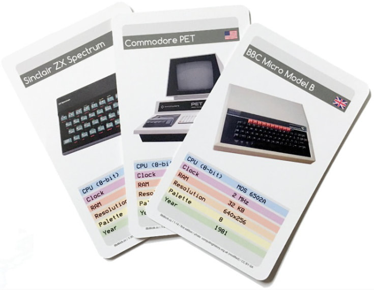
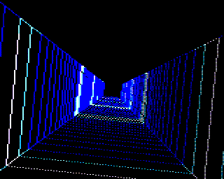

Cassette emulator
PlayUEF
Load classic Acorn / BBC Micro cassette software straight from your browser. Built with the suggestions and expertise of the Acorn community at the Stardot forum.

A tribute to the machines that inspired a generation.
Collectible cards
A tribute to the machines that brought computing home in the 1980s. The cards collate a small piece of computing history, letting you compare the stats of retro machines — and play a Top Trumps–style card game with them too.
Designs from the original Kickstarter deck were donated to the Centre for Computing History, who print and sell them to support their museum.

Creative retro coding
BBC Micro Bot runs your Mastodon toot on an 8-bit computer emulator and replies with a video. Toot-sized programs are written in BBC BASIC — a language created by Sophie Wilson in 1981 for the BBC Micro. It's amazing what people create in a few lines of code for a 1980s home computer!
Since 2020 it's been featured in Gizmodo, IEEE Spectrum and Xataka, and won fans including comedian Dara Ó Briain, science writer Ben Goldacre, and Raspberry Pi founder Eben Upton. Over 10,000 BASIC programs have run through it, with a talented, friendly community.

Cassette emulator
Load classic Acorn / BBC Micro cassette software straight from your browser. Built with the suggestions and expertise of the Acorn community at the Stardot forum.
Browser experiments
80s synthwave sequencer with WAV export.
3D audio frequency visualizer.
Real-time video to BBC Teletext converter.
Voice-controlled AI voxel scene builder (WebXR).
128×128 image to C byte-array convertor.
Convert BASIC to VDU byte strings for BBCMicroBot.
IMU data streaming over Bluetooth LE.
Get in touch
For questions about buying the cards, contact the Centre for Computing History store. For anything else, get in touch with 8bitkick's creator Dominic Pajak.